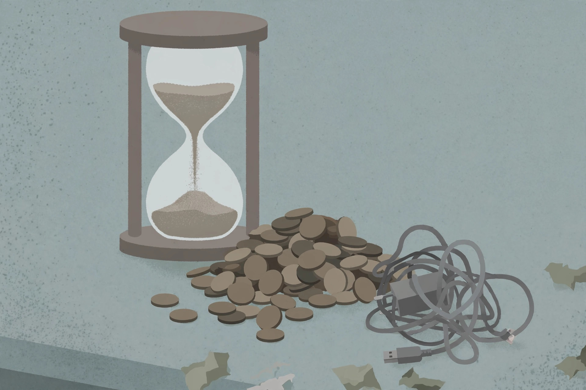

Side hustle time-wasters to skip: the eight-hour test

You have roughly eight good evening hours a week — maybe fewer once life takes its cut. Before spending any of them on a new hustle, run the opportunity through the eight-hour test: would I spend eight of my scarce evening hours on this, knowing the realistic return? Most hyped hustles fail it. Here's what the evidence says about the usual suspects, and a checklist to screen anything new before it eats an evening.
The usual suspects (and what they actually pay)
| Hustle | Realistic hourly return | Why it fails the test |
|---|---|---|
| Survey / reward apps | A few dollars, sometimes under $1/hr after disqualifications | Marketed as free and easy; firsthand tests put real rates around $0.85–$3/hr (Medium; Daily Financial Buzz) |
| Delivery & rideshare apps | Below average once costs are counted | Gas, vehicle wear and unpaid waiting time push the real rate below the ~$28.63/hr all-category average cited by Daily Financial Buzz |
| MLM schemes | Negative for nearly everyone | Per FTC figures cited by RichWankerPoorWanker, 99.6% of participants lose money — and it monetizes your friendships |
| Trend-chasing dropshipping / POD | $5–$15 per sale before ad spend | Thin margins, constant ad costs, and saturation the moment a trend is visible (Daily Financial Buzz; Editorialge) |
| Data labeling micro-tasks | $2–$3/hr | Piece rates measured in cents, competition for scraps, platform cuts of 30–50% (Medium) |
| "Passive income" content (ebooks, courses, channels) | $0 for 12–18 months, possibly forever | Real but slow: only worth it as a long game alongside real income, not as the plan (RichWankerPoorWanker; Side Hustle Times) |
The free-to-earn trap
A pattern worth naming: the hustles that cost nothing to start are often the most expensive in time. Free-to-earn schemes — reward apps, micro-task platforms, "just click boxes" gigs — are free for a reason: other people are making money off your data and your attention while you earn pennies. When the entry price is zero, you are usually the product being priced. Skip them on sight.
The screening checklist: six questions before you start
Run any opportunity through these six filters — adapted from the "five filters of a low-value hustle" (Editorialge) and extended for evening workers:
- What's the real hourly math? Subtract all costs — fees, subscriptions, materials, vehicle wear, taxes — and divide by all hours, including setup and admin. If it's under your walk-away rate, it's a no.
- Who else is doing exactly this? If the model is copy-paste and AI can copy-paste faster than you, there's no edge. You need a specific advantage: a skill, a network, a location, an asset.
- Does it need paid traffic to work? If the only way to get a customer is paying $2 to make $1.50 in profit, the math never works without a bankroll you're not going to spend on a side hustle.
- Is it actually passive, or operationally heavy? Fifty customer-service emails a day about lost packages is not passive income — it's a second job with worse hours. Count the maintenance hours, not just the setup story.
- Does it fit your actual calendar? A hustle needing 20+ hours a week of maintenance is a low-ROI trap for someone with eight evening hours; high-ROI hustles need 5–10 hours aimed at growth (Editorialge).
- Would it still make sense in a year? If the opportunity depends entirely on a short-lived trend, the answer is no — you'll be learning a skill with a six-month expiry date.
Two or more red flags means walk away. One means proceed only with a 30-day trial and a hard stop date.
What to do instead
- Instead of surveys: user-testing platforms pay for real feedback on websites and apps — same couch, meaningfully higher rates (Gist/Side Hustle Times).
- Instead of delivery apps: a local service with a real hourly rate — cleaning, dog walking, handyman work — pays for skill and reliability, not for your car's depreciation.
- Instead of trend-chasing products: sell a defined freelance service to one client type; specific beats broad, and the first client is the hardest (see our evening freelancing guide).
- Instead of "passive" schemes: treat content as the long game it is — start it, but fund those months with real income, not hope.
No income promises here. This is general information, not financial advice. Hourly figures are cited from the linked sources and vary wildly by market, timing and effort. Your own math — with your real costs and your real hours — is the only number that matters.
The eight-hour test is brutal on purpose. Your evenings are the scarcest hours you own; anything that can't clear a simple screen doesn't deserve one of them.